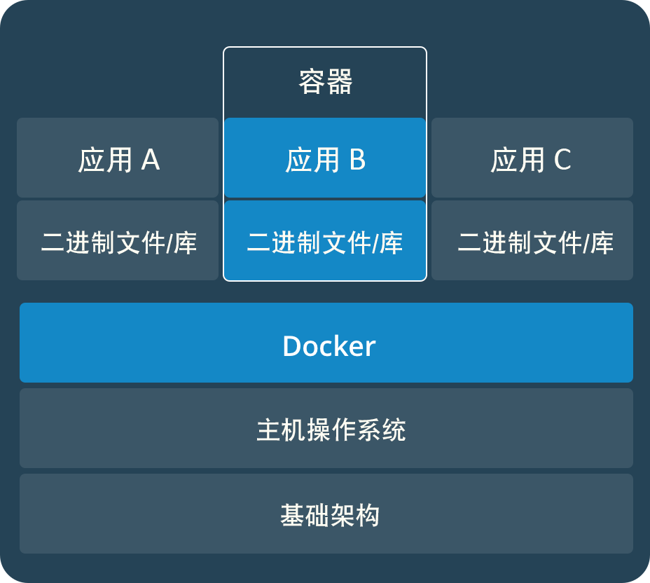
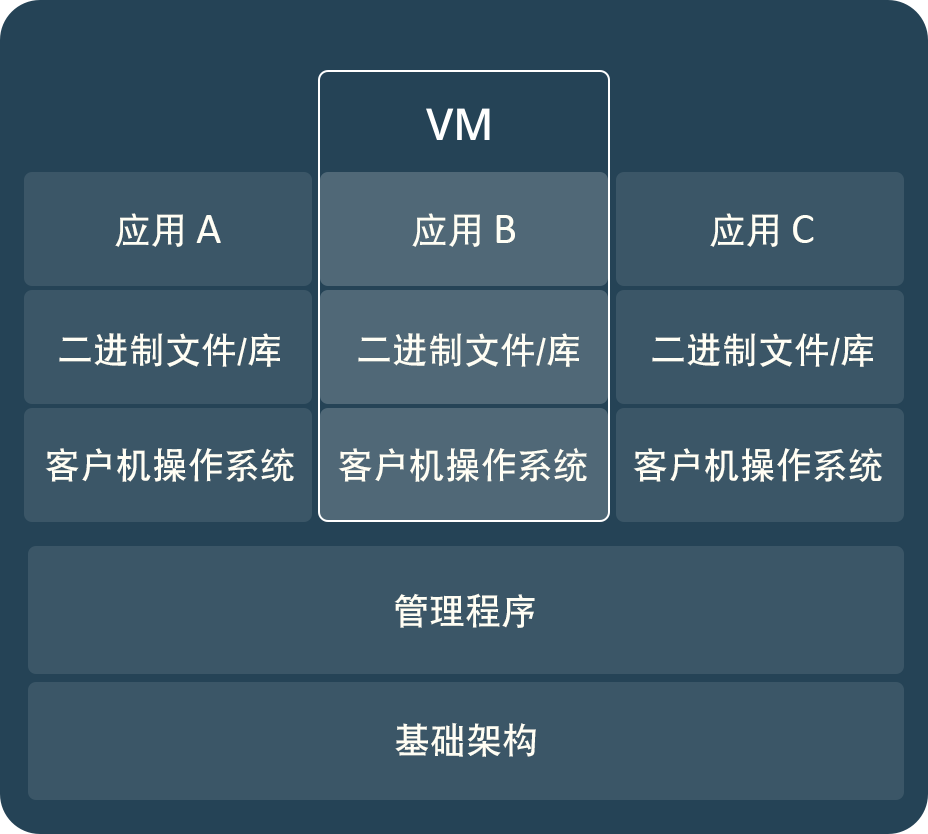

了解一下Docker 概念，如今容器技术在互联网行业发展的已经相当成熟，
springBoot 微服务 结合 k8s 部署线上服务，安全 高效，充分利用机器资源
✨镜像
镜像是一种轻量级、可执行的独立软件包，它包含运行某个软件所需的所有内容，包括代码、运行时、库、环境变量和配置文件。
镜像使用分层存储
✨容器
容器是镜像的运行时实例 - 实际执行时镜像会在内存中变成什么。默认情况下，它完全独立于主机环境运行，仅在配置为访问主机文件和端口的情况下才执行此操作。
容器的实质是进程，但与直接在宿主执行的进程不同，容器进程运行于属于自己的独立的 命名空间。因此容器可以拥有自己的 root 文件系统、自己的网络配置、自己的进程空间，甚至自己的用户 ID 空间。容器内的进程是运行在一个隔离的环境里，使用起来，就好像是在一个独立于宿主的系统下操作一样。这种特性使得容器封装的应用比直接在宿主运行更加安全，占用的内存不超过任何其他可执行文件。
镜像使用的是分层存储，容器也是如此。每一个容器运行时，是以镜像为基础层，在其上创建一个当前容器的存储层，我们可以称这个为容器运行时读写而准备的存储层为容器存储层。
容器存储层的生存周期和容器一样，容器消亡时，容器存储层也随之消亡。因此，任何保存于容器存储层的信息都会随容器删除而丢失。
容器可以被创建、启动、停止、删除、暂停等


服务
在分布式应用中，应用的不同部分称为“服务”。例如，假设有一个视频共享网站，它可能提供用于在数据库中存储应用程序数据的服务、用于在用户上传一些内容后在后台进行视频转码的服务、用于前端的服务等。
服务实际上是“生产中的容器”。一项服务仅运行一个镜像，但它会编制镜像的运行方式 - 它应使用的端口、容器的多少个从节点应运行才能使服务的容量满足其需求等。扩展服务将更改运行该软件的容器实例数，并将多个计算资源分配给进程中的服务。
Swarm
swarm 是一组运行 Docker 并且已加入集群中的机器.执行此操作后,可以继续运行已使用的 Docker 命令,但现在它们在集群上由 swarm 管理节点执行。
swarm 中的机器可以为物理或虚拟机。加入 swarm 后，可以将它们称为节点。
✨镜像仓库 Repository
镜像仓库是一组 Docker 镜像。可以通过将镜像仓库推送到镜像库服务器来对其进行共享。
通常,一个仓库会包含同一个软件不同版本的镜像，而标签就常用于对应该软件的各个版本。我们可以通过 <仓库名>:<标签> 的格式来指定具体是这个软件哪个版本的镜像。如果不给出标签，将以 latest 作为默认标签。
✨镜像库 Docker Registy
一个镜像仓库中可以包含多个仓库（Repository）；每个仓库可以包含多个标签（Tag）；每个标签对应一个镜像。
镜像库是一项包含镜像仓库的托管服务
分层存储
因为镜像包含操作系统完整的 root 文件系统，其体积往往是庞大的，因此在 Docker 设计时，就充分利用 Union FS 的技术，将其设计为分层存储的架构。所以严格来说，镜像并非是像一个 ISO 那样的打包文件，镜像只是一个虚拟的概念，其实际体现并非由一个文件组成，而是由一组文件系统组成，或者说，由多层文件系统联合组成。
镜像构建时，会一层层构建，前一层是后一层的基础。每一层构建完就不会再发生改变，后一层上的任何改变只发生在自己这一层。比如，删除前一层文件的操作，实际不是真的删除前一层的文件，而是仅在当前层标记为该文件已删除。在最终容器运行的时候，虽然不会看到这个文件，但是实际上该文件会一直跟随镜像。因此，在构建镜像的时候，需要额外小心，每一层尽量只包含该层需要添加的东西，任何额外的东西应该在该层构建结束前清理掉。
分层存储的特征还使得镜像的复用、定制变的更为容易。甚至可以用之前构建好的镜像作为基础层，然后进一步添加新的层，以定制自己所需的内容，构建新的镜像。
链接: 概念